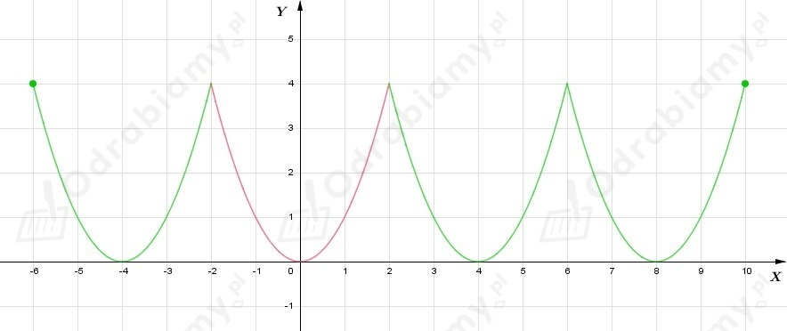
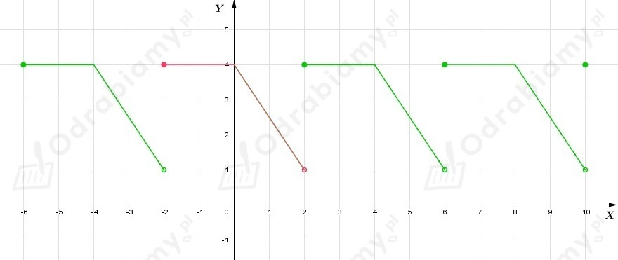
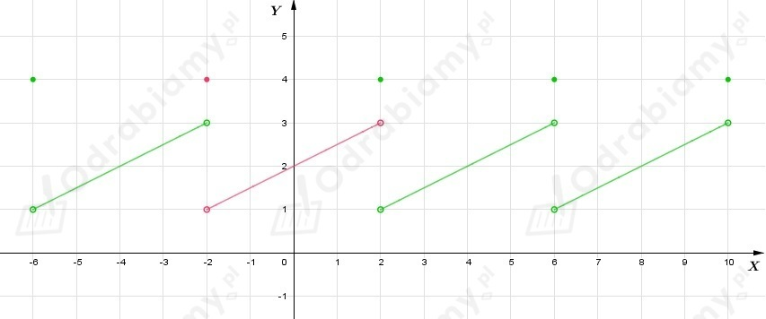

a)
Okres podstawowy funkcji wynosi 2.
Do obliczenia poszczególnych wartości funkcji wykorzystamy informację dotyczącą funkcji okresowej
gdzie T - okres funkcji, k - dowolna liczba całkowita.
b)
Okres podstawowy funkcji wynosi 4.
Do obliczenia poszczególnych wartości funkcji wykorzystamy informację dotyczącą funkcji okresowej
gdzie T - okres funkcji, k - dowolna liczba całkowita.
a)
Z treści zadania wiemy, że
Zatem
b)
Z treści zadania wiemy, że
Zatem
| Przypomnijmy, że:
argumentu x ∈ D i dowolnej liczby całkowitej k
Liczbę T nazywamy okresem funkcji.
|
Korzystając z definicji funkcji okresowej zauważamy, że dla dowolnej liczby T≠0
Zatem dla dowolnej liczby rzeczywistej x oraz T≠0
Więc na mocy definicji funkcji okresowej wnioskujemy, że funkcja stała f(x)=c dla każdego x ∈ R jest funkcją okresową, a jej okresem jest każda liczba rzeczywista dodatnia.
Dla funkcji stałej f(x)=c nie istnieje okres podstawowy, ponieważ T jest dowolną dodatnią liczbą rzeczywistą, a nie ma najmniejsza liczby dodatniej.
Przykładowo jeśli:
a)

b)

c)
